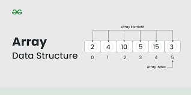

Introduction to C++
C++ is a powerful, high-performance programming language that supports both procedural and object-oriented programming. It is widely used for system/software development, game programming, competitive coding, and real-time applications.
Features of C++
- Object-Oriented: Supports classes, objects, inheritance, polymorphism, and encapsulation.
- Fast and Efficient: Offers high performance with close-to-hardware capabilities.
- Rich Standard Library: Comes with a powerful set of built-in functions and data structures.
- Platform Independent: C++ code can run on different platforms with minimal changes.
- Low-Level Manipulation: Supports direct memory access using pointers.
Basic Syntax
#include <iostream>
using namespace std;
int main() {
cout << "Hello, World!";
return 0;
}
- #include <iostream> → Includes the input/output library
- using namespace std; → Lets you use cout, cin, etc. without std:: prefix.
- int main() → Main function where execution begins
- cout << → Used for printing output.
- return 0; → Indicates successful program termination.
Applications of C++
- Game Development: C++ is used to build high-performance games and game engines.
- System Programming: Used to develop operating systems, device drivers, and system tools.
- Competitive Programming: Favored for speed, STL support, and control over resources.
- Software Development: Used to build applications like browsers, media players, and database tools.
Online C++ Compiler
Introduction to Arrays
What is an Array?
An array is a data structure that stores a collection of elements, all of the same data type, in a contiguous block of memory. Each element in an array can be accessed directly using its index, with indexing typically starting from 0.
Characteristics of Arrays
- Fixed Size: The size of an array is defined when it is created and cannot be changed.
- Homogeneous Elements: All elements in an array must be of the same data type.
- Indexed Access: Each element is accessed using its index, starting from 0.
Types of Arrays
- One-Dimensional Array: A simple list of elements in a single row.
- Example: int numbers[5];(stores 5 integer numbers)
- Multi-Dimensional Array: Arrays with more than two dimensions.
- Example: int matrix[3][3];(a 3×3 matrix of integers)
- Dynamic Array: An array whose size is determined at runtime using pointers.
Tutorial for Array
Introduction to Trees
A tree in C++ is a hierarchical data structure consisting of nodes, where each node stores data and links (pointers) to its child nodes, starting from a root node, and there are no cycles.

Charcteristics of Trees
- Hierarchical Structure: Data is organized in a parent-child relationship.
- Root Node: The topmost node with no parent.
- No Cycles: Trees do not contain any loops or cycles.
- Nodes and Edges: A tree is made up of nodes (data) and edges
- Subtrees: Every child node forms its own subtree.
- Leaf Nodes: Nodes that do not have any children.
Types of Trees
- Binary Tree: Each node has at most two children—left and right
- Binary Search Tree (BST): A binary tree where left < root < right.
- AVL Tree: A self-balancing binary search tree.
- Heap Tree: A complete binary tree that satisfies the heap property.
- Trie (Prefix Tree): A tree used to store strings efficiently.
Applications of Trees
- Database Indexing: Trees (like B-trees) are used to index large datasets for fast search, insert, and delete operations.
- File System Management: Hierarchical file systems use tree structures to store files and directories.
- Autocomplete and Spell Checking: Tries (prefix trees) are used to efficiently search and autocomplete words.
- Expression Parsing: Expression trees represent mathematical expressions for easier evaluation and manipulation.
Tutorial for Tree
Introduuction to Graphs
A graph is a non-linear data structure consisting of a set of nodes (vertices) and a set of edges that connect pairs of nodes, which can be directed or undirected.

Characteristics of Graphs
- Vertices and Edges: A graph is made up of nodes (vertices) and connections (edges).
- Directed or Undirected: Edges can be one-way (directed) or two-way (undirected)
- Weighted or Unweighted: Edges can have weights (costs) or be simple connections.
- Cyclic or Acyclic: A graph may contain cycles (loops) or be cycle-free.
- Sparse or Dense: Based on the number of edges relative to vertices.
Types of Graphs
- Directed Graph (Digraph): Edges have a direction, going from one vertex to another.
- Undirected Graph: Edges do not have a direction, they connect nodes both ways.
- Weighted Graph: Each edge has a weight or cost associated with it.
- Unweighted Graph: Edges do not carry any weight—just connections.
- Cyclic Graph: A graph that contains one or more cycles (loops).
- Acyclic Graph: A graph that has no cycles.
- Social Networks: Graphs represent users as nodes and connections (friendships/follows) as edges.
- Routing and Navigation: Used in GPS and maps to find shortest paths.
- Web Page Linking: The structure of the internet is a graph of pages and hyperlinks.
- Network Routing: Graphs are used in computer networks for data transfer paths.